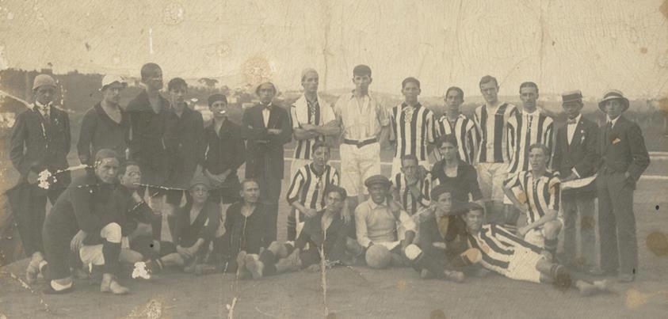
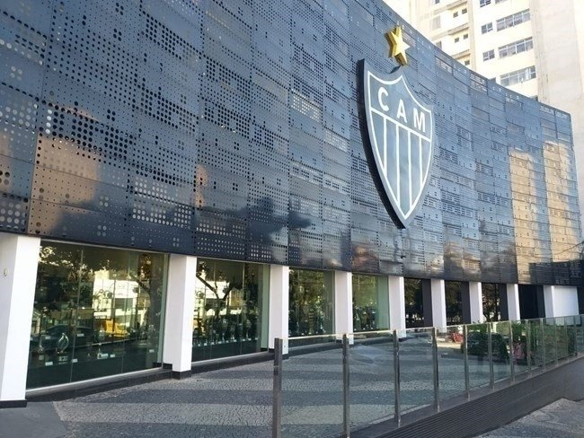
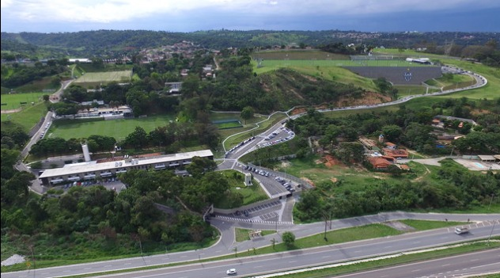
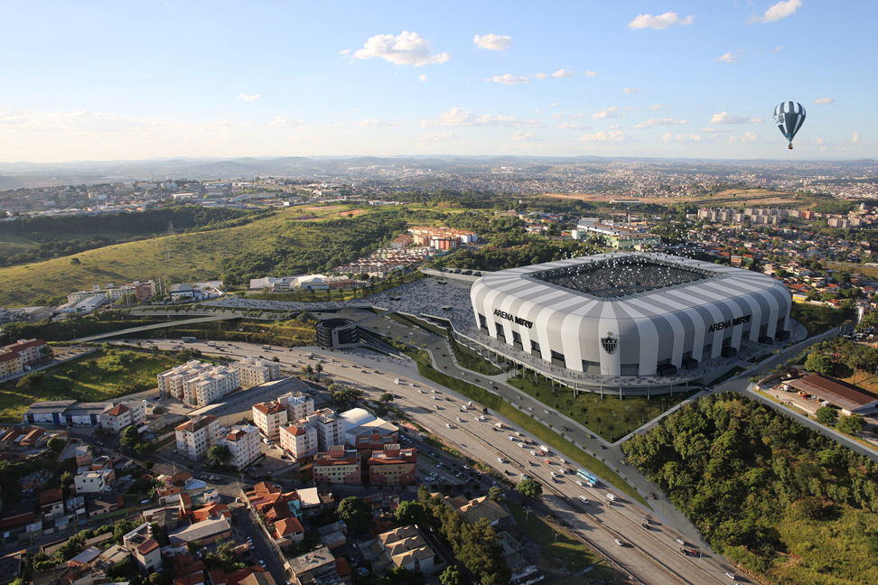

História
O acontecimento que marcou o nascimento do Clube Atlético Mineiro se deu em 25 de março de 1908. Nessa data, um grupo de estudantes se reuniu no coreto do Parque Municipal, em Belo Horizonte, e criou aquele que se tornaria um dos maiores clubes do futebol mundial.
Como prenúncio da trajetória vitoriosa que viria a trilhar, o Atlético venceu o seu primeiro desafio. Foi em 21 de março de 1909, quando a equipe alvinegra derrotou o Sport Club Futebol, por 3 a 0, na casa do adversário. O primeiro gol do Galo foi marcado por Aníbal Machado, que se tornaria um grande escritor brasileiro. O Sport não se conformou com a derrota, pediu revanche e foi novamente superado, desta vez pelo placar de 2 a 0. Na terceira partida entre as equipes, o Atlético aplicou uma goleada por 4 a 0, resultado que causou a extinção do Sport e o início do reinado atleticano em Minas Gerais, que perdura até os dias de hoje.
Seu símbolo e alcunha mais popular é o Galo, mascote oficial no final da década de 1930. Embora tenha atuado em outras modalidades esportivas ao longo dos anos, seu reconhecimento e suas principais conquistas foram alcançados no futebol. O clube é o maior campeão do Campeonato Mineiro com 46 troféus,[13] além de ser o maior vencedor do Clássico Mineiro,[14] com uma grande vantagem contra seu rival, o Cruzeiro. No âmbito nacional, foi campeão brasileiro duas vezes, em 1971 e 2021, além de outros três títulos nacionais oficiais: a Copa dos Campeões (FBF) em 1937, a Copa dos Campeões (CBD) em 1978, e a Copa do Brasil, em 2014 e 2021. Na esfera internacional, possui quatro títulos oficiais: uma Copa Libertadores da América, duas Copas Conmebol e uma Recopa Sul-Americana.
Estrutura
Sede de Lourdes

A sede social e administrativa do Atlético está localizada no Bairro de Lourdes, região nobre de Belo Horizonte. Em seu andar térreo, pode ser visitado o Memorial do clube. O prédio também abriga o Auditório Elias Kalil e, na sua lateral, localiza-se a Loja do Galo.
Cidade do Galo

Com área total de 245 mil m², a Cidade do Galo é um dos maiores e mais completos centros de treinamento e concentração do mundo.
São sete campos de tamanho oficial, dois deles com arquibancada, campo de grama sintética e hotel de primeira linha para concentração, com salão de jogos, restaurante, auditório, deck panorâmico e cozinha industrial.
Arena MRV

A Arena MRV (formalmente chamada de Estádio Presidente Elias Kalil) é um estádio de futebol brasileiro em construção, localizado em Belo Horizonte. A arena pertence ao Clube Atlético Mineiro, que mandará seus os jogos no local.
Contatos
Fale Conosco
| Nome: | |
| Email: | |
| Escreva Aqui: |